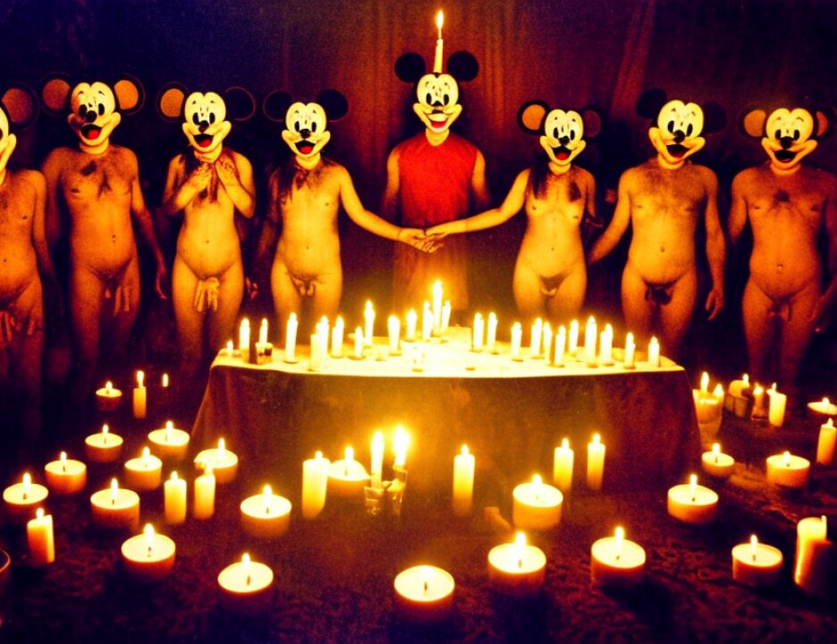

23 continues to ship things like Stinger Missiles to the Arab
24 mujahadeen because it is in the national interests of the
25 United States to support what they are doing in Afghanistan.
5868
1 Khalfan Mohamed is 16 years old.
2 At age 17 in 1990, he moves to Dar es Salaam to live
3 and to work. As you may imagine, the opportunities in Kidimni
4 are few. And he begins to work with his brother who has a
5 store in Dar es Salaam. The evidence is that Khalfan Khamis
6 Mohamed did not grow up in a very religious household. In
7 fact, his family is not very religious at all. It's really at
8 age 16 and 17, when he moves to Dar es Salaam, that he begins
9 to study Islam for the first time with any degree of
10 seriousness.
11 He begins to attend a mosque in the Ilala section of
12 Dar es Salaam and he is befriended by a man from Mombasa,
13 Kenya, named Sulieman, whose full name is Suleiman Abdallah,
14 and he begins, as it says, his first serious studies of Islam.
15 The world events continue to move forward, and in
16 that same year, Iraq, another Muslim country, invades Kuwait,
17 another Muslim country, on the Saudi Peninsula, and what we
18 call the Gulf War begins. And the United States, under
19 President George Bush, the first George Bush president, I'll
20 call him George Bush 41 and George Bush 43, because I recently
21 learned George Bush was the 41st president and George Bush now
22 is the 43rd, but under George Bush 41, the Gulf War begins.
23 The United States sends troops to Saudi Arabia. The
24 king of Saudi Arabia, King Fahd, invites the American troops
25 into what to many Muslims is a sacrilege into the land of the
5869
1 two holy places, as we have heard it referred to from time to
2 time, Mecca and Medina, the two holiest sites in Islam.
3 And very quickly, by January 1991 Iraq is defeated.
4 Saddam Hussein is not deposed, removed from government,
5 remains in government, but Iraq is defeated, is driven from
6 Kuwait, but the United States forces remain in Saudi Arabia,
7 indeed, where they remain today.
8 In 1994, Khalfan Mohamed has continued to pursue his
9 studies of Islam. As you will see, if you dig into the
10 statement, he listens to lectures, he listens to cassette
11 recordings, he listens to scholars and other teachers to tell
12 him about Islam, and he meets a man named Fahid, who is Fahid
13 Mohammed Ally, who tells Khalfan Khamis Mohamed that although
14 he is a nice man, he does not trust Khalfan Mohamed, but if he
15 went to Afghanistan and got some training, perhaps then he
16 would trust him.
17 And Khalfan Mohamed goes to Afghanistan through
18 Karachi, into Afghanistan, into a camp that is primarily run
19 by Pakistani people. It's supported by groups from Pakistan.
20 The teachers and the leaders at the camp are from Pakistan.
21 You will learn that it was his belief that his reason and
22 purpose for going to training was to learn how to help other
23 Muslims, if necessary, through arms struggle, and he thought
24 he might go to Bosnia to help Muslim people there.
25 The quotes are from his statement. I'm not just
5870
1 giving you the quotes, they are contained within his
2 statement.
3 Now, the government argues in an effort, perhaps, to
4 put Khalfan Mohamed into a conspiracy that is existing long
5 before he becomes aware of it and into a conspiracy that is
6 aimed at killing Americans. Remember, the first Count of this
7 indictment is a conspiracy to kill Americans. The government
8 claims that by going to Afghanistan and taking training,
9 Khalfan Mohamed has joined the conspiracy and is participating
10 in it.
11 Mr. Karas, in summing up for the government, made the
12 statement, well, we had the witness Hamisi who said Khalfan
13 Mohamed realized that his training camp was underwritten by
14 Usama Bin Laden. If wishes were horses, they say beggars
15 would ride. It's not that the government has a lot to wish
16 for in its proofs again Khalfan Mohamed, but that was a
17 misunderstanding of what Mr. Hamisi actually said.
18 The question that Mr. Karas actually asked of
19 Mr. Hamisi was the following, and the transcript reference is
20 there for you:
21 "Did Khalfan tell you who it was that he believed had
22 financed the training he had taken?" And the witness, like
23 witnesses often do, especially witnesses who are not
24 sophisticated, answers the question two different ways. He
25 says: "He mentioned to me, he says Usama Bin Laden is the one
5871
1 who helps a lot of groups over there." So you got one piece
2 of information. Usama Bin Laden helps a lot of groups over
3 there in Afghanistan. "But he didn't go into detail that he
4 received that help."
5 This was not an act in furtherance of this
6 overarching conspiracy. What was it? An effort to be trusted
7 by people he greatly, greatly respected and wanted to be part
8 of.
9 So what happened after 1995? One thing that did not
10 happen is that he was not asked to join al Qaeda. You will
11 recall Mr. Kherchtou's testimony that what would happen after
12 the training in Afghanistan is that the best prospects would
13 be pulled aside, taken aside and asked to become a member of
14 al Qaeda. He was not asked to do that.
15 In fact, after the training was over, what Khalfan
16 Mohamed did was he returned to Afghanistan by himself. He
2